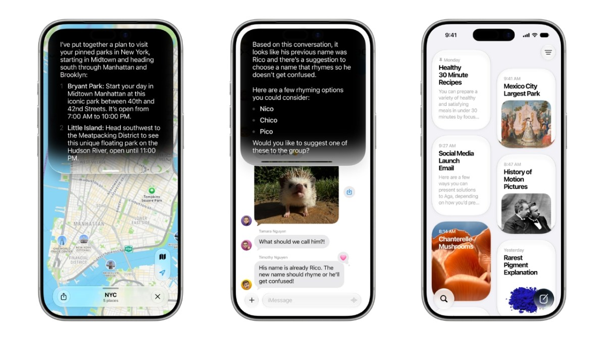
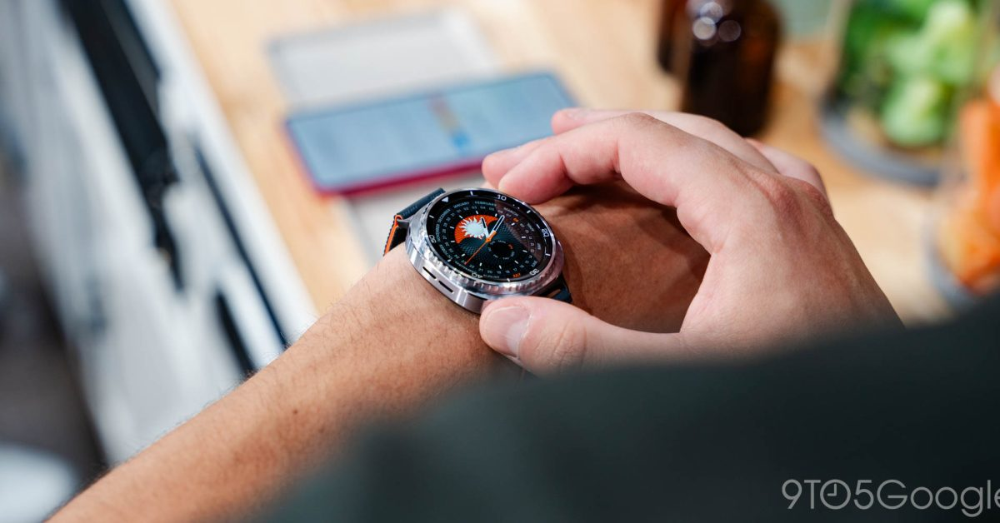
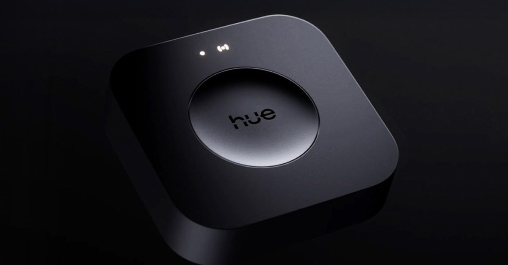
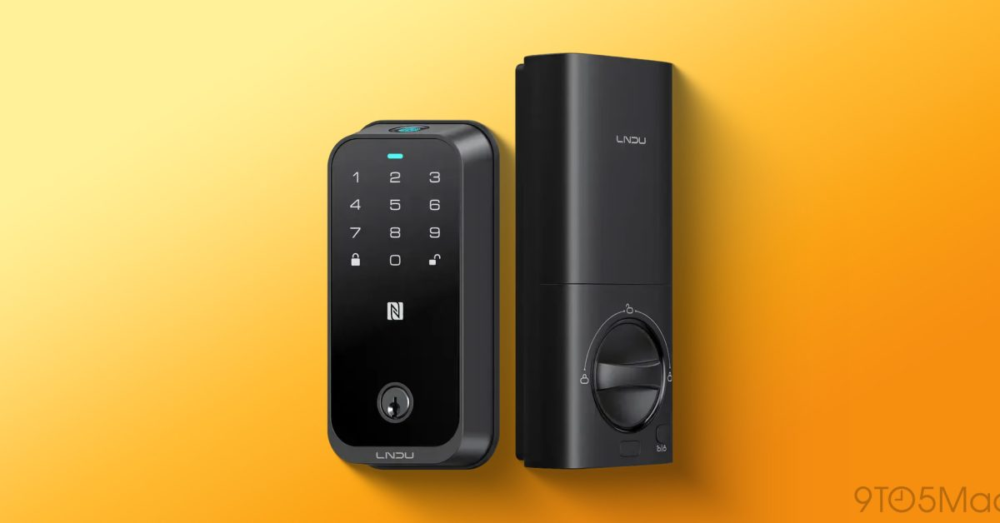
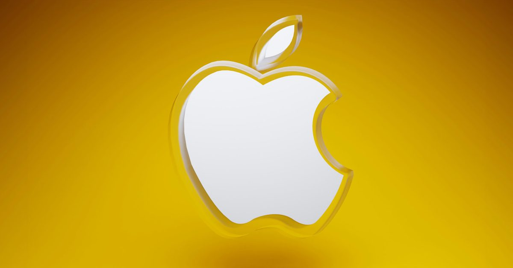

애플, 새 시리 AI 일반 공개 베타로 전면 개방
애플이 iOS 27 퍼블릭 베타를 통해 대화형으로 재설계된 시리를 개발자 등록 없이 누구나 써볼 수 있게 열었다. 이번 베타에는 화면 사용 시간 기능 개편과 성능 개선도 함께 담겨, 정식 출시 전 폭넓은 사용자 반응을 확인하려는 행보로 풀이된다. 구글·아마존 등 경쟁 음성비서 진영과의 AI 격차 좁히기 경쟁이 본격적으로 달아오르고 있다.
업계 관찰자 시점 · 이미지를 누르면 원문으로 이동합니다

애플이 iOS 27 퍼블릭 베타를 통해 대화형으로 재설계된 시리를 개발자 등록 없이 누구나 써볼 수 있게 열었다. 이번 베타에는 화면 사용 시간 기능 개편과 성능 개선도 함께 담겨, 정식 출시 전 폭넓은 사용자 반응을 확인하려는 행보로 풀이된다. 구글·아마존 등 경쟁 음성비서 진영과의 AI 격차 좁히기 경쟁이 본격적으로 달아오르고 있다.

삼성헬스가 새 디자인 개편과 함께 이용자에게 건강 데이터를 AI 학습용으로 제공하거나, 거부할 경우 장기적으로 앱을 사실상 쓸 수 없게 되는 선택지를 제시했다. 헬스 플랫폼이 개인 건강 데이터를 AI 학습 자원으로 끌어들이려는 흐름이 구체화되면서 데이터 주권과 프라이버시 논쟁이 다시 불거지고 있다. 유사한 동의 방식이 다른 헬스케어·웰니스 서비스로 번질지 업계의 관심이 쏠린다.

필립스 휴의 최신 브리지 프로 펌웨어 업데이트가 일부 이용자의 허브를 완전히 마비시켜 조명과 연결 기기를 제어할 수 없게 만드는 문제를 일으켰다. 제조사는 뒤늦게 수정 패치를 배포했지만, 허브 하나의 소프트웨어 결함이 가정 내 모든 연결기기에 연쇄적으로 영향을 줄 수 있다는 위험성이 다시 확인된 사례로 거론된다.

애플 홈키와 와이파이를 함께 지원하는 저가형 스마트 도어락 LNDU HK01W가 출시돼, 그동안 고가 제품에만 한정됐던 홈키 기능의 진입 장벽을 낮췄다. 스마트폰이나 워치를 태그해 문을 여는 방식이 보급형 라인업까지 확대되면서 출입 제어 기기 시장의 가격 경쟁이 심화될 것으로 보인다.

미국 정부가 애플을 포함한 8개 기업에 대해 아랍에미리트로의 첨단 컴퓨팅 칩과 데이터센터 장비 반출 시 개별 수출 허가 절차를 면제하기로 했다. 이는 AI 인프라를 둘러싼 미국의 대중동 수출 통제 기조가 완화되는 신호로 해석되며, 글로벌 AI 서버·데이터센터 공급망 전반에 영향을 줄 수 있다는 관측이 나온다.
인스타그램 총괄 아담 모세리는 기업들이 조만간 급여나 운영비를 다루듯 AI 사용 비용을 관리하게 될 것이라며, 엔지니어별로 AI 토큰 사용 한도가 생길 수 있다고 전망했다. AI 기능이 각종 소프트웨어와 기기에 깊숙이 내재화되면서, 사용량 기반 비용 통제가 기업의 새로운 운영 과제로 떠오르고 있음을 보여주는 발언이다.